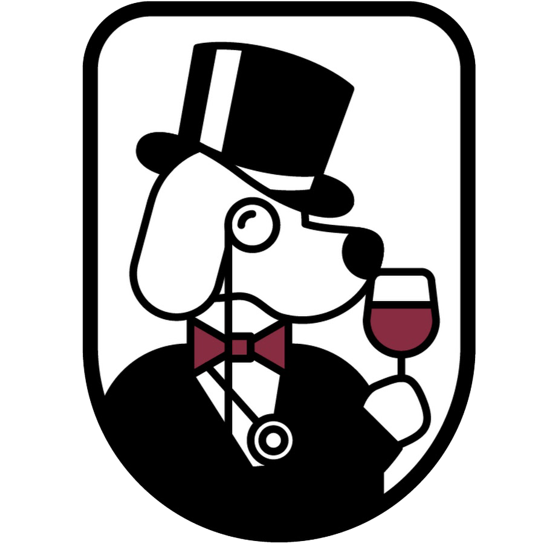

Solo Vino Club
Historia de club vino
El primer club de vinos de España fue Vinoselección, lo creó Massimo Galimberti en Madrid en el año 1973. Lo novedoso del club fue la venta a distancia ya que en España era prácticamente desconocida. Desde su nacimiento, el compromiso de Vinoselección ha sido y es difundir la cultura del vino y dar a conocer los vinos de calidad. Para ello, se rodeó de un experto equipo de enólogos y profesionales que se encargarían de localizar los vinos que servirían directamente, desde la bodega al domicilio de los socios del club. En 1980, Vinoselección da un paso más y se dispone a rescatar del olvido los quesos artesanos elaborados en España. Esta original iniciativa pronto contó con adeptos de todos los rincones de la Península, y, animados por el éxito de la selección de quesos y a instancias de los propios socios, se crea en 1983 el área gastronómica, que oferta al socio productos gourmet artesanos. A finales de la década de los 80, el club de vinos Vinoselección comienza su expansión internacional, teniendo presencia en países como Gran Bretaña, Alemania, Holanda, Argentina, Uruguay, Brasil, Canadá y EE.UU. Durante 46 años, Vinoselección ha sabido posicionarse y conservar su liderazgo como primer club de vinos de España (el 80% de ventas a distancia de vino en España se realiza a través de Vinoselección) y uno de los mayores del mundo. Ya son 100.000 los socios que lo forman.